Gambar dan Pembungkus Teks (Pictures and Text Wrapping)
Menambahkan gambar ke dokumen Anda bisa menjadi cara yang bagus untuk mengilustrasikan informasi penting dan menambahkan aksen dekoratif ke teks yang ada. Digunakan dalam jumlah sedang, gambar dapat meningkatkan tampilan keseluruhan dokumen Anda.
Untuk menyisipkan gambar dari file:
Jika Anda memiliki gambar tertentu, Anda dapat menyisipkan gambar dari file. Dalam contoh kita, kita akan menyisipkan gambar yang disimpan secara lokal di komputer kita. Jika Anda ingin bekerja dengan contoh kami, klik kanan gambar di bawah dan simpan ke komputer Anda.

Tempatkan titik penyisipan di mana Anda ingin gambar muncul.
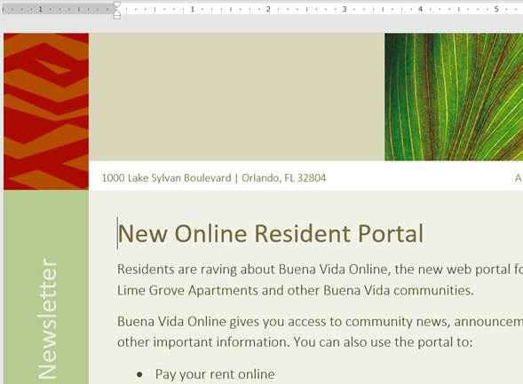
Pilih tab Insert pada Ribbon, lalu klik perintah Pictures.

Kotak dialog Sisipkan Gambar akan muncul. Arahkan ke folder tempat gambar Anda berada, lalu pilih gambar dan klik Sisipkan.

Gambar akan muncul di dokumen.

Untuk mengubah ukuran gambar, klik dan seret salah satu tuas pengatur ukuran sudut. Gambar akan berubah ukuran sambil menjaga proporsi yang sama. Jika Anda ingin meregangkannya secara horizontal atau vertikal, Anda dapat menggunakan pegangan ukuran samping .

Mengubah pengaturan pembungkusan teks
Saat Anda menyisipkan gambar dari file, Anda mungkin memperhatikan bahwa sulit untuk memindahkannya tepat di tempat yang Anda inginkan. Ini karena pembungkusan teks untuk gambar diatur ke In Line with Text. Anda harus mengubah pengaturan pembungkusan teks jika Anda ingin memindahkan gambar dengan bebas, atau jika Anda hanya ingin teks membungkus gambar dengan cara yang lebih alami.
Untuk membungkus teks di sekitar gambar:
Pilih gambar yang ingin Anda bungkus teksnya. The Format tab akan muncul di sisi kanan Ribbon.

Pada tab Format, klik perintah Bungkus Teks di grup Susun, lalu pilih opsi pembungkusan teks yang diinginkan. Dalam contoh kita, kita akan memilih In Front of Text sehingga kita dapat dengan bebas memindahkannya tanpa mempengaruhi teks. Anda juga dapat memilih Opsi Tata Letak Lainnya untuk menyempurnakan tata letak. 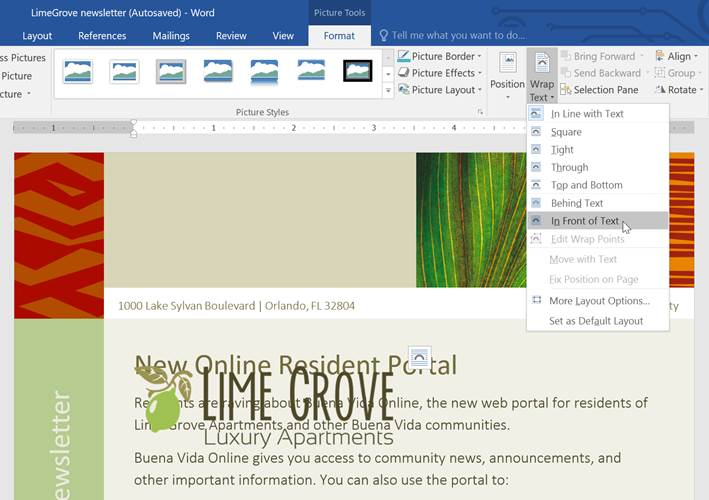
Teks akan membungkus gambar. Anda sekarang dapat memindahkan gambar jika Anda mau. Cukup klik dan seret ke lokasi yang diinginkan. Saat Anda memindahkannya, panduan perataan akan muncul untuk membantu Anda menyelaraskan gambar di halaman.
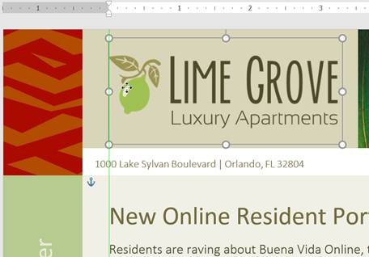
Anda juga dapat mengakses opsi pembungkusan teks dengan memilih gambar dan mengklik tombol Opsi Tata Letak yang muncul.

Jika panduan perataan tidak muncul, pilih tab Page Layout, lalu klik perintah Align. Pilih Use Alignment Guides dari menu drop-down yang muncul.

Menggunakan pengaturan pembungkusan teks yang telah ditentukan sebelumnya
Pembungkusan teks yang telah ditentukan sebelumnya memungkinkan Anda memindahkan gambar dengan cepat ke lokasi tertentu di halaman. Teks akan secara otomatis membungkus objek sehingga tetap mudah dibaca.

Memasukkan gambar online
Jika Anda tidak memiliki gambar yang diinginkan di komputer, Anda dapat menemukan gambar secara online untuk ditambahkan ke dokumen Anda. Word menawarkan dua opsi untuk menemukan gambar online:
Pencarian Gambar Bing : Anda dapat menggunakan opsi ini untuk mencari gambar di Internet. Secara default, Bing hanya menampilkan gambar yang dilisensikan di bawah Creative Commons, yang berarti Anda dapat menggunakannya untuk proyek Anda sendiri. Namun, Anda harus mengeklik tautan ke situs web gambar untuk melihat apakah ada batasan tentang cara penggunaannya.

OneDrive : Anda dapat menyisipkan gambar yang disimpan di OneDrive Anda. Anda juga dapat menautkan akun online lainnya dengan akun Microsoft Anda, termasuk Facebook dan Flickr.

Untuk menyisipkan gambar online:
Tempatkan titik penyisipan di mana Anda ingin gambar muncul.

Pilih tab Sisipkan, lalu klik perintah Gambar Online.

Kotak dialog Sisipkan Gambar akan muncul.
Pilih Pencarian Gambar Bing atau OneDrive Anda. Dalam contoh kita, kita akan menggunakan Pencarian Gambar Bing.
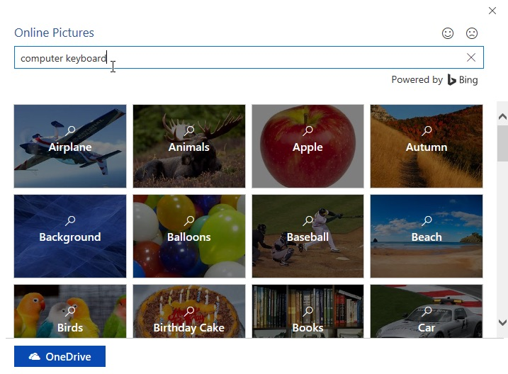
Tekan tombol Enter. Hasil pencarian Anda akan muncul di dalam kotak.
Pilih gambar yang diinginkan, lalu klik Sisipkan.
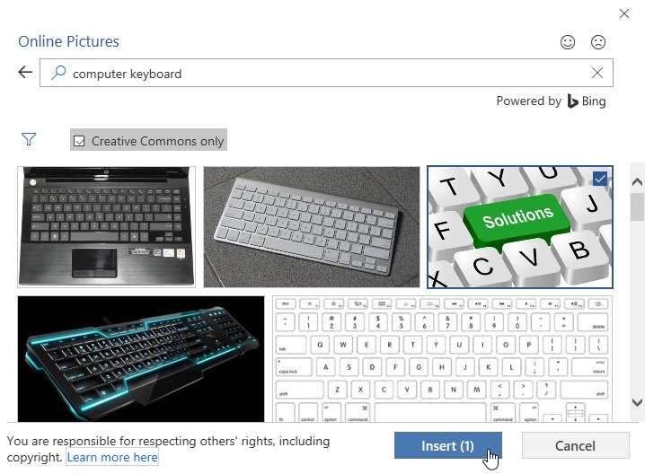
Gambar akan muncul di dokumen.
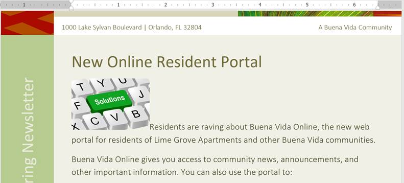
Saat menambahkan gambar, video, atau musik ke proyek Anda sendiri, penting untuk memastikan Anda memiliki hak hukum untuk menggunakannya. Sebagian besar barang yang Anda beli atau unduh secara online dilindungi oleh hak cipta, yang berarti Anda mungkin tidak diizinkan untuk menggunakannya. Untuk informasi lebih lanjut, tinjau pelajaran Hak Cipta dan Penggunaan Wajar kami.
Tantangan!
Buka dokumen latihan kami dan gulir ke halaman 3.
Ubah pembungkus teks gambar anjing menjadi Kotak.
Seret gambar ke sisi kanan paragraf bawah.
Tempatkan titik penyisipan Anda di sebelah judul Pengingat Komunitas.
Gunakan perintah Gambar Online dan ketik kata Daur Ulang ke dalam pencarian.
Sisipkan simbol daur ulang.
Jika perlu, gunakan gagang pengatur ukuran sudut untuk mengubah ukuran simbol daur ulang sehingga semuanya pas di halaman 3.
Ubah pembungkus teks menjadi Kotak dan seret simbol ke sisi kanan poin pertama.
Setelah selesai, halaman 3 akan terlihat seperti ini:

Memformat Gambar (Formatting Pictures)
Ada banyak cara untuk memformat gambar di Word. Misalnya, Anda dapat mengubah ukuran atau bentuk gambar agar lebih sesuai dengan dokumen Anda. Anda juga dapat meningkatkan penampilannya menggunakan alat penyesuaian gambar Word.
Untuk memotong gambar:
Saat Anda memotong gambar, sebagian gambar akan dihapus. Memotong dapat berguna jika Anda bekerja dengan gambar yang terlalu besar dan Anda ingin fokus hanya pada sebagian saja.
Pilih gambar yang ingin Anda potong. The Format tab akan muncul.
Dari tab Format, klik perintah Pangkas.

C ropping handles akan muncul di sisi dan sudut gambar. Klik dan seret pegangan apa pun untuk memotong gambar. Karena gagang pemangkas berada di dekat gagang pengubah ukuran, berhati-hatilah agar tidak menyeret gagang pengubah ukuran secara tidak sengaja.

Untuk mengonfirmasi, klik lagi perintah Pangkas. Gambar akan dipotong.
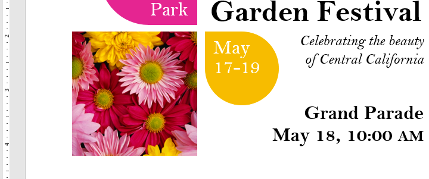
Pegangan sudut berguna untuk memotong gambar secara bersamaan secara horizontal dan vertikal.
Untuk memotong gambar menjadi bentuk:
Pilih gambar yang ingin Anda potong, lalu klik tab Format.
Klik panah tarik-turun Pangkas. Arahkan kursor ke Pangkas ke Bentuk, lalu pilih bentuk yang diinginkan dari menu tarik-turun.

Gambar akan dipotong ke bentuk yang dipilih.

Untuk menambahkan batas ke gambar:
Pilih gambar yang ingin Anda tambahkan batasnya, lalu klik tab Format.
Klik perintah Batas Gambar. Menu tarik-turun akan muncul.
Dari sini, Anda dapat memilih warna, berat (ketebalan), dan apakah garis putus - putus.
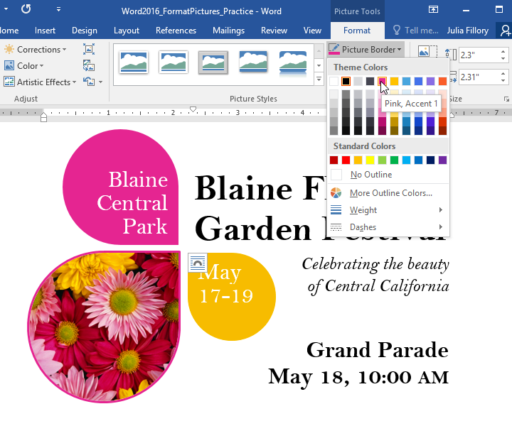
Perbatasan akan muncul di sekitar gambar.
Membuat penyesuaian gambar
Dengan alat penyesuaian gambar Word, Anda dapat dengan mudah mengubah properti seperti warna, kontras, saturasi, dan nada. Word juga menawarkan gaya gambar bawaan, yang dapat digunakan untuk menambahkan bingkai, bayangan jatuh, dan efek standar lainnya.
Saat Anda siap untuk menyesuaikan gambar, cukup pilih. Kemudian gunakan opsi di bawah ini, yang dapat ditemukan di tab Format.

Koreksi
Dari sini, Anda dapat mempertajam atau memperhalus gambar untuk menyesuaikan seberapa jelas atau buram tampilannya. Anda juga dapat menyesuaikan kecerahan dan kontras, yang memengaruhi kecerahan dan intensitas umum gambar.

Warna
Dengan menggunakan perintah ini, Anda dapat menyesuaikan saturasi gambar (seberapa cerah warna yang muncul), nada (suhu warna gambar, dari dingin ke hangat), dan pewarnaan (warna keseluruhan gambar).
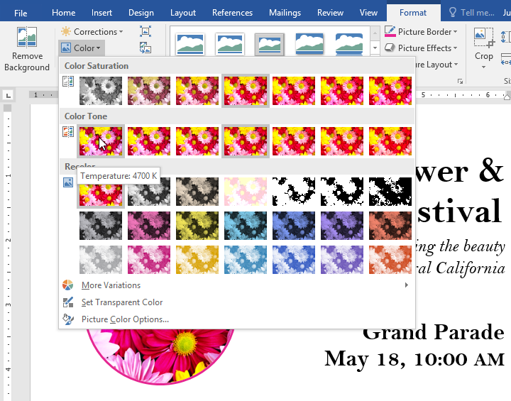
Efek Artistik
Di sini, Anda dapat menerapkan efek khusus pada gambar Anda, seperti pastel, cat air, atau tepi bercahaya. Karena hasilnya sangat tebal, Anda mungkin ingin menggunakan efek ini dengan hemat (terutama dalam dokumen profesional).
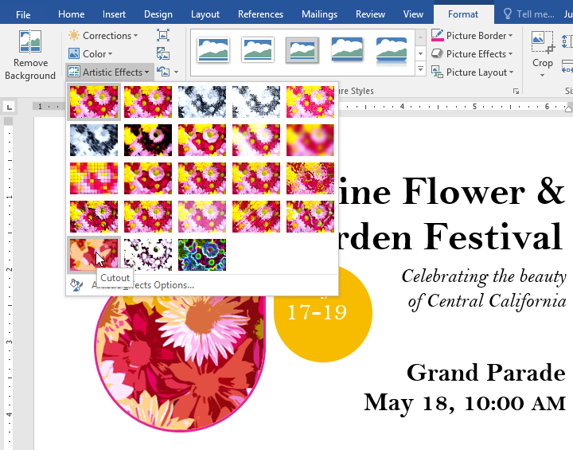
Grup Gaya Gambar
Grup ini berisi berbagai gaya standar yang membuat pemformatan gambar menjadi lebih mudah. Gaya gambar dirancang untuk membingkai gambar Anda tanpa mengubah pengaturan atau efek dasarnya.
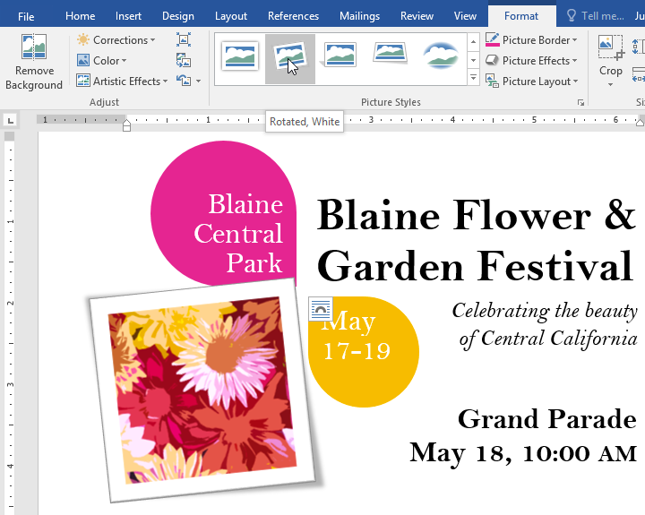
Mengompresi gambar
Jika Anda berencana untuk mengirim email berisi dokumen yang berisi gambar, Anda harus memantau ukuran filenya. Gambar besar beresolusi tinggi dapat menyebabkan dokumen Anda menjadi sangat besar, yang mungkin menyulitkan untuk dilampirkan ke email. Selain itu, area gambar yang dipotong disimpan dalam dokumen secara default, yang dapat menambah ukuran file.
Untungnya, Anda dapat mengurangi ukuran file dokumen dengan mengompresi gambar. Ini akan menurunkan resolusinya dan menghapus area yang dipotong.
Mengompresi gambar dapat secara nyata memengaruhi kualitasnya (misalnya, gambar menjadi buram atau berpiksel). Karena itu, sebaiknya simpan salinan tambahan dokumen Anda sebelum mengompresi gambar. Juga, bersiaplah untuk menggunakan perintah Undo jika Anda tidak puas dengan hasilnya.
Untuk mengompresi gambar:
Pilih gambar yang ingin Anda kompres, lalu navigasikan ke tab Format.
Klik perintah Kompres Gambar.

Sebuah kotak dialog akan muncul. Centang kotak di sebelah Hapus area gambar yang dipotong. Anda juga dapat memilih apakah akan menerapkan pengaturan ke gambar ini saja atau ke semua gambar dalam dokumen.
Pilih keluaran Target. Jika Anda mengirim dokumen melalui email, Anda mungkin ingin memilih Email, yang menghasilkan ukuran file terkecil.
Klik Oke.
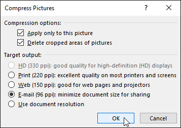
Tantangan!
Buka dokumen latihan kami.
Gulir ke halaman 2 dan pilih gambar perahu layar.
Di tab Format, ubah gaya menjadi Bingkai Sederhana, Putih.
Dengan gambar tetap dipilih, gunakan Crop to Shape dan crop ke bentuk Double Wave dalam kategori Stars and Banners. Petunjuk : Nama bentuk akan muncul saat Anda mengarahkan kursor ke atasnya.
Pilih gambar jangkar.
Di tab Format, gunakan menu tarik-turun Warna untuk mewarnai ulang jangkar menjadi Emas, Warna Aksen 2 Terang.
Setelah selesai, halaman Anda akan terlihat seperti ini:
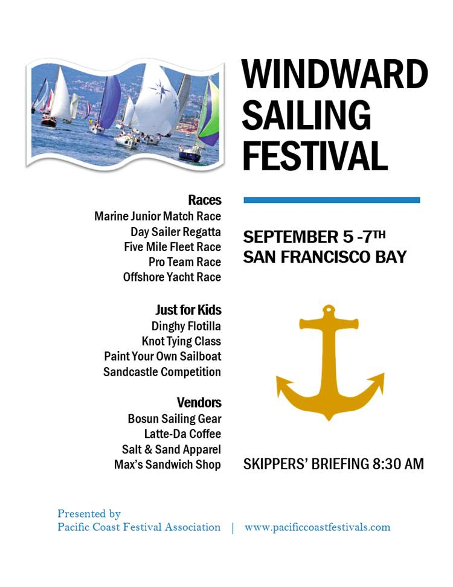
Bentuk (Shapes)
Anda dapat menambahkan berbagai bentuk ke dokumen Anda, termasuk panah, info, kotak, bintang, dan bentuk diagram alur. Ingin membedakan nama dan alamat Anda dari resume Anda yang lain? Gunakan garis. Perlu membuat diagram yang menunjukkan garis waktu atau proses? Gunakan bentuk diagram alur. Meskipun Anda mungkin tidak memerlukan bentuk di setiap dokumen yang Anda buat, mereka dapat menambahkan daya tarik visual dan kejelasan.
Untuk menyisipkan bentuk:
Pilih tab Sisipkan, lalu klik perintah Bentuk. Menu drop-down bentuk akan muncul.
Pilih bentuk yang diinginkan.

Klik dan seret di lokasi yang diinginkan untuk menambahkan bentuk ke dokumen Anda.

Jika mau, Anda dapat memasukkan teks dalam bentuk. Saat bentuk muncul di dokumen Anda, Anda bisa mulai mengetik. Anda kemudian dapat menggunakan opsi pemformatan pada tab Beranda untuk mengubah font, ukuran font, atau warna teks.

Untuk mengubah urutan bentuk:
Jika satu bentuk tumpang tindih dengan yang lain, Anda mungkin perlu mengubah urutannya sehingga bentuk yang benar muncul di depan. Anda dapat membawa bentuk ke depan atau mengirimkannya ke belakang. Jika Anda memiliki banyak gambar, Anda dapat menggunakan Bawa ke Depan atau Kirim ke Belakang untuk menyesuaikan urutannya. Anda juga dapat memindahkan bentuk di depan atau di belakang teks.
Klik kanan bentuk yang ingin Anda pindahkan. Dalam contoh kami, kami ingin hati muncul di belakang pita, jadi kami akan mengklik kanan hati.

Di menu yang muncul, arahkan kursor ke Bawa ke Depan atau Kirim ke Belakang. Beberapa opsi pemesanan akan muncul. Pilih opsi pemesanan yang diinginkan. Dalam contoh ini, kita akan memilih Send to Back.
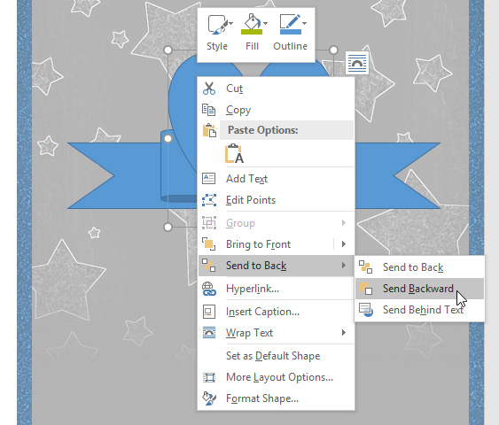
Urutan bentuk akan berubah.

Dalam beberapa kasus, opsi pengurutan yang Anda pilih tidak akan memengaruhi pengurutan bentuk. Jika ini terjadi, coba pilih opsi yang sama lagi atau coba opsi lain.
Jika Anda memiliki beberapa bentuk yang ditempatkan di atas satu sama lain, mungkin sulit untuk memilih satu bentuk. The panel Seleksi memungkinkan Anda untuk memilih bentuk dan tarik ke lokasi baru. Untuk mengakses panel Pilihan, klik Panel Pilihan pada tab Format.

Untuk mengubah ukuran bentuk:
Pilih bentuk yang ingin Anda ubah ukurannya. Gagang pengatur ukuran akan muncul di sudut dan sisi bentuk.
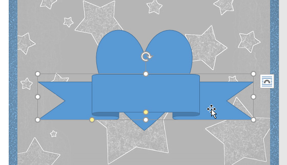
Klik dan seret gagang pengatur ukuran hingga bentuknya sesuai dengan ukuran yang diinginkan. Anda dapat menggunakan gagang pengatur ukuran sudut untuk mengubah tinggi dan lebar bentuk secara bersamaan.

Untuk memutar bentuk, klik dan seret gagang rotasi.

Beberapa bentuk juga memiliki satu atau lebih pegangan kuning yang dapat digunakan untuk memodifikasi bentuk. Misalnya, dengan bentuk spanduk Anda dapat mengatur posisi lipatan.

Memodifikasi bentuk
Word memungkinkan Anda untuk memodifikasi bentuk Anda dalam berbagai cara sehingga Anda dapat menyesuaikannya dengan proyek Anda. Anda dapat mengubah bentuk menjadi bentuk yang berbeda, memformat gaya dan warna bentuk, dan menambahkan berbagai efek.
Untuk mengubah gaya bentuk:
Memilih gaya bentuk memungkinkan Anda menerapkan warna dan efek prasetel untuk mengubah tampilan bentuk Anda dengan cepat.
Pilih bentuk yang ingin Anda ubah.

Pada Format tab, klik Lebih panah drop-down di Styles Shape kelompok.

Menu tarik-turun gaya akan muncul. Pilih gaya yang ingin Anda gunakan.
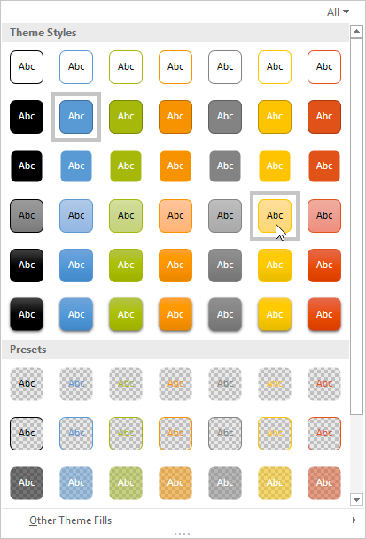
Bentuk akan muncul dalam gaya yang dipilih.

Untuk mengubah warna isian bentuk:
Pilih bentuk yang ingin Anda ubah.

Pada tab Format, klik panah turun bawah Isi Bentuk. Pilih warna yang ingin Anda gunakan. Untuk melihat opsi warna tambahan, pilih More Fill Colors.

Bentuknya akan muncul dalam warna isian yang dipilih.

Jika Anda ingin menggunakan jenis isian yang berbeda, pilih Gradien atau Tekstur dari menu tarik-turun. Anda juga dapat memilih Tanpa Isi untuk membuatnya transparan.
Untuk mengubah garis bentuk:
Pilih bentuk yang ingin Anda ubah.

Pada tab Format, klik panah turun bawah Shape Outline. Menu Shape Outline akan muncul.
Pilih warna yang ingin Anda gunakan. Jika Anda ingin membuat outline transparan, pilih No Outline.

Bentuk akan muncul dalam warna garis yang dipilih.

Dari menu tarik-turun, Anda dapat mengubah warna garis, berat (ketebalan), dan apakah itu garis putus - putus.

Untuk menambahkan efek bentuk:
Pilih bentuk yang ingin Anda ubah.

Pada tab Format, klik panah turun bawah Efek Bentuk. Di menu yang muncul, arahkan mouse ke gaya efek yang ingin Anda tambahkan, lalu pilih efek preset yang diinginkan.

Bentuk akan muncul dengan efek yang dipilih.
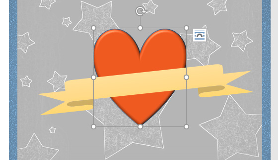
Untuk lebih menyesuaikan efek bentuk Anda, pilih Opsi di akhir setiap menu. Panel Format Shape akan muncul, memungkinkan Anda untuk menyesuaikan efek.

Untuk mengubah ke bentuk lain:
Pilih bentuk yang ingin Anda ubah. The Format tab akan muncul.

Pada tab Format, klik perintah Edit Bentuk. Di menu yang muncul, arahkan mouse ke Change Shape, lalu pilih bentuk yang diinginkan.

Bentuk baru akan muncul.
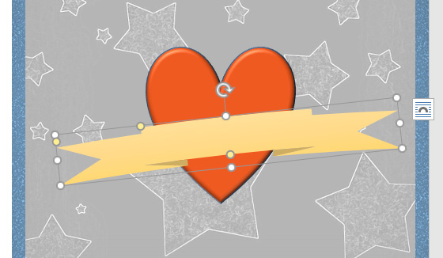
Tantangan!
Buka dokumen latihan kami.
Di sisi kanan halaman, sisipkan bentuk awan dari grup Bentuk dasar. Petunjuk: Nama bentuk muncul saat Anda mengarahkan kursor ke atasnya.
Ubah garis bentuk menjadi abu-abu.
Ubah isian bentuk menjadi putih.
Di bawah menu drop-down Shape Effects, tambahkan Circle Bevel.
Di atas awan, masukkan bentuk Matahari dari grup Bentuk dasar.
Ubah gaya bentuk menjadi gaya Emas pilihan Anda. Petunjuk : Nama gaya muncul saat Anda mengarahkan kursor ke atasnya. Pastikan nama gaya memiliki kata Emas di dalamnya.
Kirim bentuk matahari ke belakang sehingga berada di belakang bentuk awan.
Jika perlu, pindahkan bentuk awan sehingga matahari mengintip dari baliknya.
Setelah selesai, gambar Anda akan terlihat seperti ini:

Kotak Teks (Text Boxes)
Kotak teks dapat berguna untuk menarik perhatian pada teks tertentu. Mereka juga dapat membantu ketika Anda perlu memindahkan teks di dalam dokumen Anda. Word memungkinkan Anda untuk memformat kotak teks dan teks di dalamnya menggunakan berbagai gaya dan efek.
Untuk menyisipkan kotak teks:
Pilih tab Sisipkan, lalu klik perintah Kotak Teks di grup Teks.

Menu tarik-turun akan muncul. Pilih Gambar Kotak Teks.

Klik dan seret di mana saja pada dokumen untuk membuat kotak teks.

Titik penyisipan akan muncul di dalam kotak teks. Anda sekarang dapat mengetik untuk membuat teks di dalam kotak teks.

Jika mau, Anda dapat memilih teks lalu mengubah font, warna, dan ukuran dengan menggunakan perintah pada tab Format dan Beranda. Untuk mempelajari lebih lanjut tentang menggunakan perintah pemformatan ini, tinjau pelajaran Memformat Teks kami.
Klik di mana saja di luar kotak teks untuk kembali ke dokumen Anda.
Anda juga dapat memilih salah satu dari built-in kotak teks yang telah ditentukan sebelumnya warna, font, posisi, dan ukuran. Jika Anda memilih opsi ini, kotak teks akan muncul secara otomatis, jadi Anda tidak perlu menggambarnya.
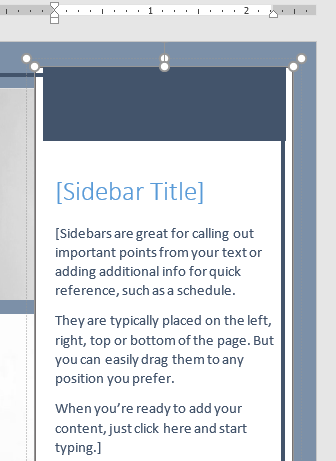
Untuk memindahkan kotak teks:
Klik kotak teks yang ingin Anda pindahkan.
Arahkan mouse ke salah satu tepi kotak teks. Mouse akan berubah menjadi salib dengan panah.
Klik dan seret kotak teks ke lokasi yang diinginkan.

Untuk mengubah ukuran kotak teks:
Klik kotak teks yang ingin Anda ubah ukurannya.
Klik dan seret salah satu gagang pengatur ukuran di sudut atau sisi kotak teks hingga mencapai ukuran yang diinginkan.

Memodifikasi kotak teks
Word menawarkan beberapa opsi untuk mengubah cara kotak teks muncul di dokumen Anda. Anda dapat mengubah bentuk, gaya, dan warna kotak teks atau menambahkan berbagai efek.
Untuk mengubah gaya bentuk:
Memilih gaya bentuk memungkinkan Anda menerapkan warna dan efek prasetel untuk mengubah tampilan kotak teks Anda dengan cepat.
Pilih kotak teks yang ingin Anda ubah.
Pada Format tab, klik Lebih panah drop-down di Styles Shape kelompok.

Menu tarik-turun gaya akan muncul. Pilih gaya yang ingin Anda gunakan.
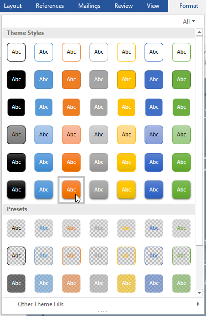
Kotak teks akan muncul dalam gaya yang dipilih.
Jika Anda ingin memiliki kontrol lebih besar atas pemformatan kotak teks, Anda dapat menggunakan salah satu opsi pemformatan bentuk seperti Isi Bentuk dan Garis Bentuk. Untuk mempelajari lebih lanjut, tinjau pelajaran Bentuk kami.
Untuk mengubah bentuk kotak teks:
Mengubah bentuk kotak teks bisa menjadi opsi yang berguna untuk menciptakan tampilan yang menarik di dokumen Anda.
Pilih kotak teks yang ingin Anda ubah. The Format tab akan muncul.
Dari tab Format, klik perintah Edit Bentuk.

Arahkan mouse ke Change Shape, lalu pilih bentuk yang diinginkan dari menu yang muncul.

Kotak teks akan muncul diformat sebagai bentuk.

Tantangan!
Buka dokumen latihan kami.
Sisipkan Kotak Teks Sederhana.
Di kotak teks, ketik Dapatkan tambahan diskon 25% saat Anda menyebutkan iklan ini!
Ubah font menjadi Gadugi, 20 pt, Center Align.
Ubah bentuk kotak teks menjadi Gelombang Ganda dari grup Bintang dan Spanduk.
Mengubah gaya kotak teks dengan memilih gaya apapun dalam Efek Intens baris.
Seret kotak teks ke ruang di bawah Beli 1, Dapatkan 1 Gratis* dan Pakaian Formal.
Setelah selesai, dokumen Anda akan terlihat seperti ini:
Menyelaraskan, Mengurutkan, dan Mengelompokkan Objek Aligning, Ordering, and Grouping Objects)
Tabel (Tables)
Charts